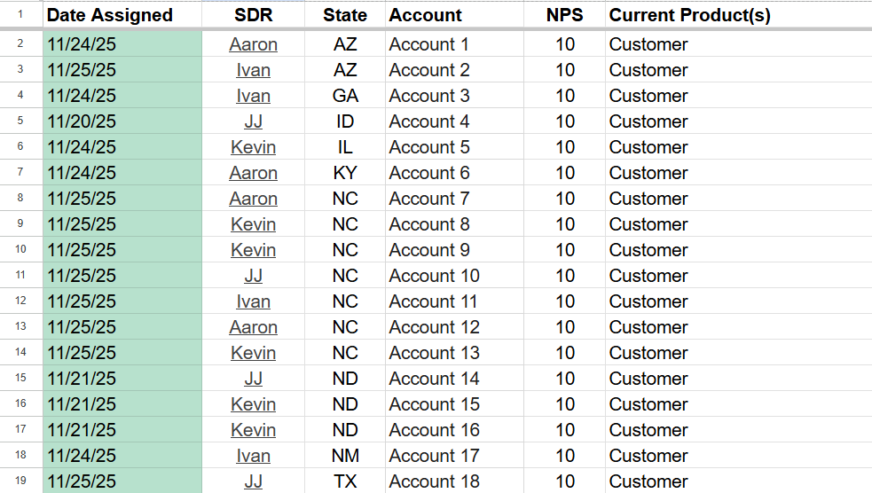
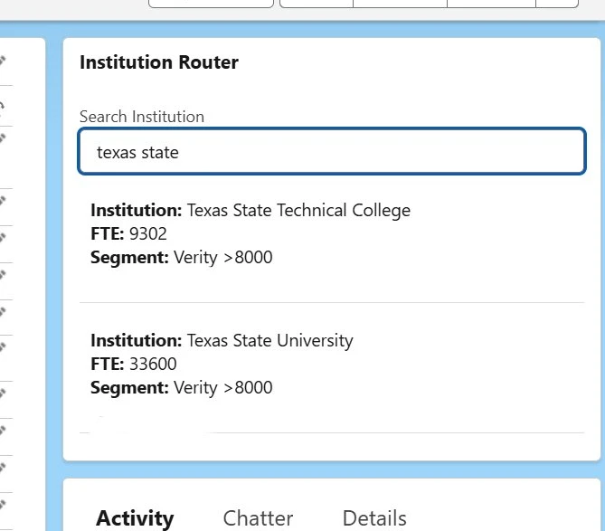

I find broken processes, fix them at the root, and build solutions that hold up over time.
I am a problem finder. Most inefficiencies don't announce themselves. They hide in repetitive manual steps, in CRM fields that nobody trusts, in processes that quietly break down over time. I look for them before they become someone else's fire drill. Whether it's a data gap causing silent automation failures, a lead ownership model creating duplicate outreach, or a lookup that costs every rep 30 seconds per account, I dig into the root cause rather than the symptom.
I am a problem solver. Once I find the problem, I build the fix. My toolkit spans Salesforce Flow Builder, Google Sheets, Apps Script, CRM governance design, and data enrichment workflows. I don't patch around issues. I build systems that eliminate them. The 9,000-account CRM enrichment didn't just clean bad data; it restored the reporting accuracy the team was making decisions from. The expired lead automation didn't just send emails; it turned a silent ownership loss point into a structured re-engagement channel.
I build for scale. Every solution I build is documented, repeatable, and designed to outlast my involvement. If the system breaks when I'm not in the room, I haven't done my job.

Built a native Salesforce system that captures lead expiration events and delivers a personalized weekly digest to each rep, turning silent ownership losses into an active re-engagement channel.
View Project →
Audited and enriched 9,000 Salesforce accounts to restore segmentation accuracy, establishing clean data foundations that improved targeting and pipeline reporting across the team.
View Project →
Designed account routing logic and ownership rules that eliminated duplicate outreach across shared institutional accounts and improved cross-sell coordination across product lines.
View Project →
Built a Google Sheets tool that reduced SDR enrollment lookup time from 30 seconds to 3 seconds, eliminating a daily friction point and freeing up prospecting capacity across the team.
View Project →